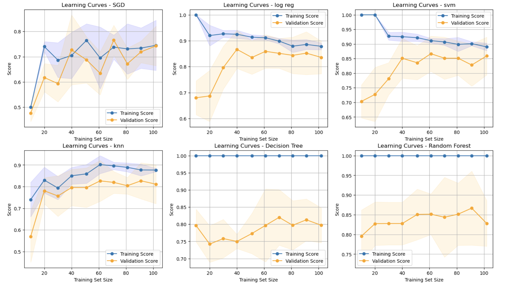

Dance Project Classification
This is a classification algorithm that can classify keypoint data of body movements in dance videos into 2 different dance styles. The two dance styles it will classify are Jazz Ballet and House.
More details
Problem
This project builds a classification algorithm that can classify keypoint data of body movements in dance videos into two different dance styles: Jazz Ballet and House.
Approach
This project will build a classification algorithm that can classify keypoint data of body movements in dance videos into 2 different dance styles. Specifically, I will use keypoint data which identifies major joints and key facial features and tracks their locations throughout a video. Then, I will build a feature vector using various calculations on the keypoint data. These calculations will be determined in order to identify a dance such as velocity or "energy," range of motion, etc. I can then use the feature vectors to build a machine learning model to classify dance videos into two different styles. I start with a small number of features and add more as needed to improve classification. This is a supervised learning task.
Results & Impact
After this analysis, I have determined that the best model for this task is logistic regression after scaling with StandardScaler and using PCA for dimension reduction. The accuracy level of the best model was 0.91 and the f1-scores for ballet-jazz and house are 0.90 and 0.91, respectively. These numbers met my goals of 0.90 for the accuracy level and f1-scores. The close second model is an SVM because it achieved the same scores, but just had a longer computing time.